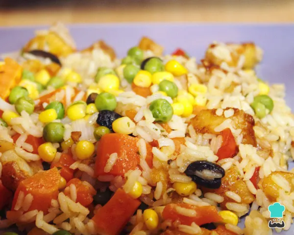

<!DOCTYPE html>
<html lang="pt-br">

<head>
  <meta charset="UTF-8">
  <meta http-equiv="X-UA-Compatible" content="IE=edge">
  <meta name="viewport" content="width=device-width, initial-scale=1.0">
  <!-- css bs5  -->
  <link rel="stylesheet" href="https://cdn.jsdelivr.net/npm/bootstrap@5.3.0-alpha1/dist/css/bootstrap.min.css">

  <link rel="stylesheet" href="css/styles.css">
  <title>Catálogo de Receitas</title>

</head>

<body>
  <div class="container-fluid my-5 bg-warning-5 flex-wrap">
    <div class="row" id="pnlCatalogo">
      <!-- inicio  
      <div class="col-sm-4">
          <div class="card">
              
              <div class="card-body">
                <h5 class="card-title">Arroz à grega tradicional</h5>
                <div class="card-text">
                  <ul>
                    <li>2 xícaras de arroz</li>
                  </ul>
                  <hr>
                  <p>O arroz à grega original é um prato com cara de festa, colorido e nutritivo. Ele é popular
                    sobretudo como acompanhamento de ceia de Natal e ceia de Ano Novo, para servir no churrasco e mais.
                  </p>
                </div>
              </div>
          </div>
      </div>
      <div class="col-sm-4">
          <div class="card">
              
              <div class="card-body">
                <h5 class="card-title">Arroz à grega tradicional</h5>
                <div class="card-text">
                  <ul>
                    <li>2 xícaras de arroz</li>
                  </ul>
                  <hr>
                  <p>O arroz à grega original é um prato com cara de festa, colorido e nutritivo. Ele é popular
                    sobretudo como acompanhamento de ceia de Natal e ceia de Ano Novo, para servir no churrasco e mais.
                  </p>
                </div>
              </div>
            </div>
      </div>
      <div class="col-sm-4">
          <div class="card">
              
              <div class="card-body">
                <h5 class="card-title">Arroz à grega tradicional</h5>
                <div class="card-text">
                  <ul>
                    <li>2 xícaras de arroz</li>
                  </ul>
                  <hr>
                  <p>O arroz à grega original é um prato com cara de festa, colorido e nutritivo. Ele é popular
                    sobretudo como acompanhamento de ceia de Natal e ceia de Ano Novo, para servir no churrasco e mais.
                  </p>
                </div>
              </div>
            </div>
      </div>
       fim  -->
    </div>
  </div>
 
  <script>
    receitas = [
      {
        título: "Bife acebolado com fritas",
        imagem: "img/bifecomfritas2.png",
        preparo: "Bife acebolado com fritas é um clássico dos restaurantes e botecos do Brasil. E não é à toa: esse prato tão simples e delicioso fica perfeito com um arroz branco bem soltinho, uma salada, uma cerveja pra acompanhar... hhhmm!",
        ingredientes: [
          { ingrediente: '1 bife' },
          { ingrediente: '1 cebola pequena' },
          { ingrediente: '1 dente de alho' },
          { ingrediente: '3 batatas pequenas' }

        ]
      },
      {
        título: "Sopa de legumes com frango",
        imagem: "img/sopadelegumes.png",
        preparo: "Emagrecer com sopa é uma das melhores opções para quem quer emagrecer com saúde e de forma natural! Veja como fazer sopa de legumes com frango desfiado bem simples de preparar com ingredientes que todos temos em casa.",
        ingredientes: [
          { ingrediente: '1 peça de frango' },
          { ingrediente: '1 cebola' },
          { ingrediente: '2 cenouras' },
          { ingrediente: '3 ramos de salsinha' }

        ]
      },
      {
        título: "Arroz à grega tradicional",
        imagem: "img/arrozargrega.png",
        preparo: "O arroz à grega original é um prato com cara de festa, colorido e nutritivo. Ele é popular sobretudo como acompanhamento de ceia de Natal e ceia de Ano Novo, para servir no churrasco e mais.",
        ingredientes: [
          { ingrediente: '2 xícaras de arroz' },
          { ingrediente: '1 dente de alho amassado' },
          { ingrediente: '2 colheres de sopa de uva-passa' },
          { ingrediente: '3 colheres de sopa de ervilha cozida' },
          { ingrediente: '3 colheres de sopa de milho' },

        ]
      },
    ]

    function getListaIngredientes(itens) {
      let returnItem = ''
      itens.map(ingrediente => {

        returnItem += `<li>${ingrediente.ingrediente}</li>`;
      })

      return returnItem;
    }
    function getCard(receita) {

      returnCard = `
      <div class="col-sm-4">  
          <div class="card">
            
            <div class="card-body">
              <h5 class="card-title">${receita.título}</h5>
              <div class="card-text">
                <ul>
                    ${getListaIngredientes(receita.ingredientes)}
                </ul>
                <hr>
                <p>${receita.preparo}</p>
              </div>
            </div>
          </div>
        </div>
        `;

      return returnCard

    }
    function preencheCatalogo() {

      receitas.map(receita => {
        const containerDiv = document.getElementById('pnlCatalogo');
        containerDiv.innerHTML = containerDiv.innerHTML + getCard(receita)
        console.log(receita)
      })

    }
    window.addEventListener('load', preencheCatalogo());
  </script>
</body>

</html>